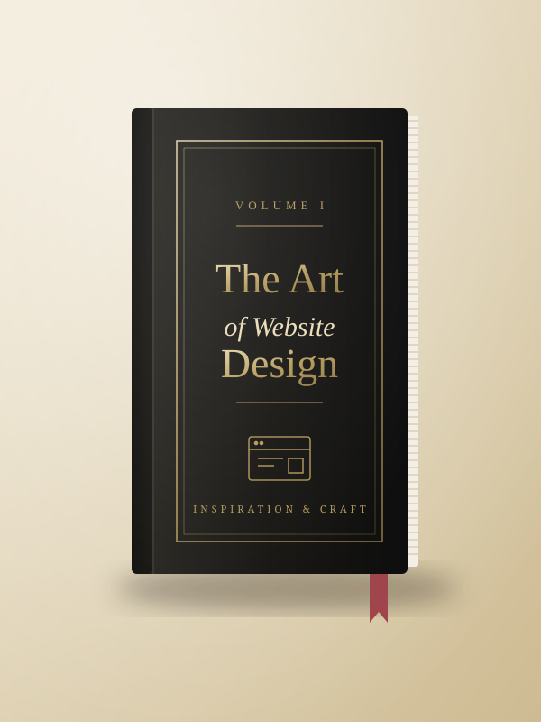
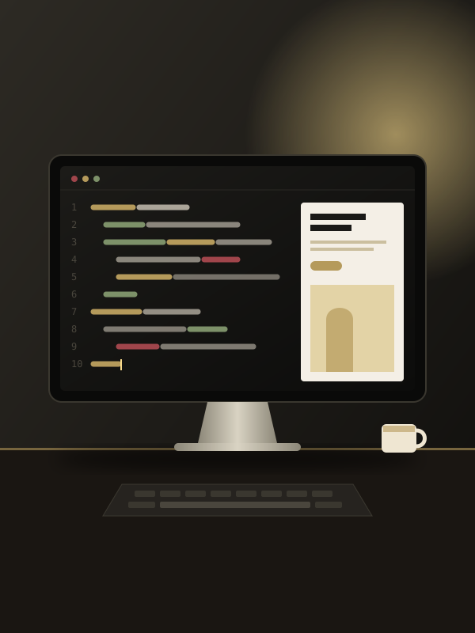
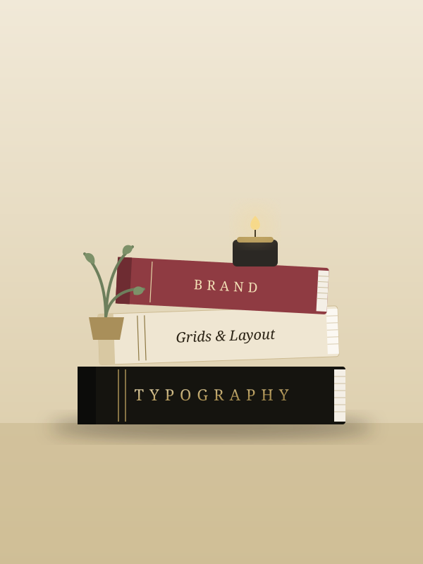
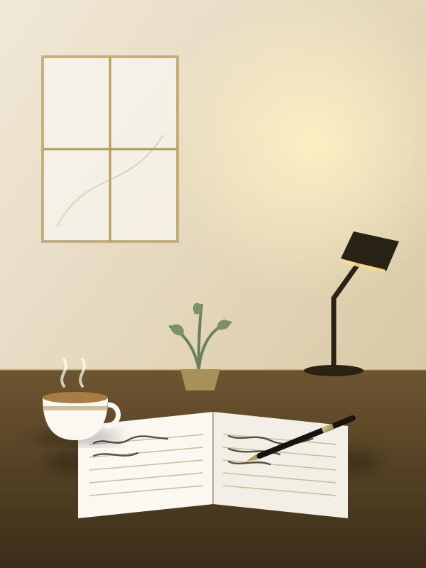
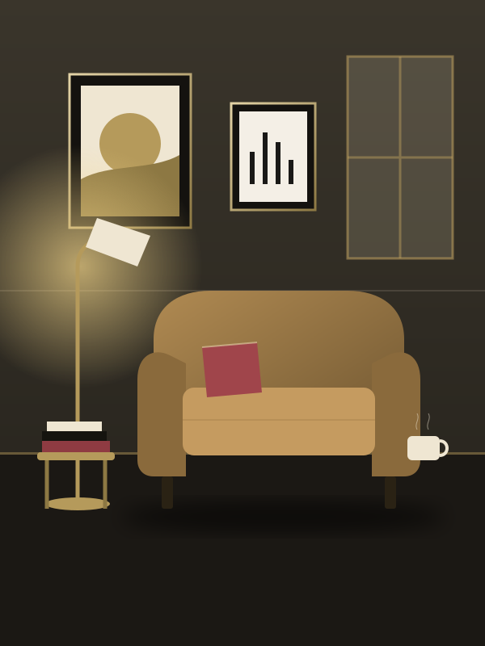
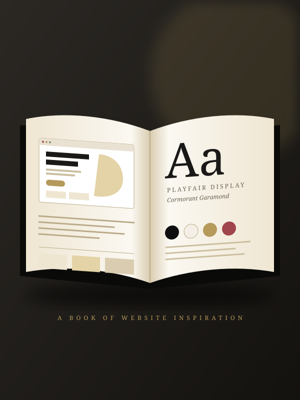
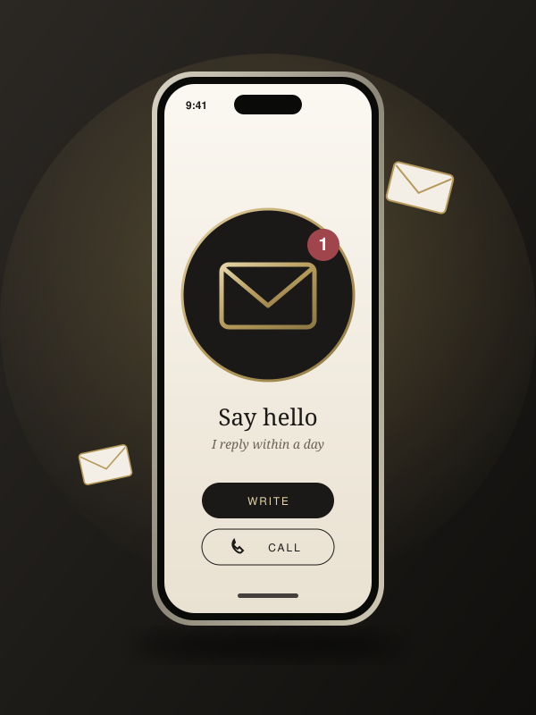

Ma — the pause
Emptiness is a material. I leave room so the important thing can breathe.

Plate I — a book of design
Plate II — code, after dark
Web, brand and social design — built in WordPress and PHP,
shaped with AI, kept as a quiet record of how things are made.

Fig. 1 — where I write
Fig. 2 — where I readI came to Australia to study information technology and cyber security — two master's degrees, in a new country, building a life from scratch. Along the way I worked as a WordPress and SEO assistant, in a warehouse and in a pizzeria, and learned that I love being useful. Somewhere between code and colour I realised the part I enjoy most is shaping how things feel.
Today I design and build websites in WordPress and PHP, craft brand concepts and social campaigns, and use AI — Claude and careful prompting — to explore ideas faster without losing the human touch.
“Space is the first luxury. Restraint is the second.”
Emptiness is a material. I leave room so the important thing can breathe.
Every page earns its keep: book, call, enquire. No guessing what to do next.
Hairlines, grain, the right 4px. The work you feel before you see it.

Study — layouts worth keepingBrief, audience, what the page must do.
Moodboards and prompt-led exploration with Claude.
Grids, type and a small, honest design system.
WordPress and PHP, tested locally first.
GitHub Pages or Cloudflare — then refine.
Home → Design System → Website Breakdown → Reflection. Hover a title to preview it.
A small experiment bench. Type anything, bend the weight, change the paper.
From a local site to a live link.
Pages that read like a magazine.
Campaigns with one consistent world.
Faster exploration, human final say.
Fundamentals, practised in a home lab.
The habits behind the work.
Two master's degrees in IT, a cloud certification, and projects documented on GitHub as I go.
Victoria University
Cyber Security major · SISTC
Cloud fundamentals
Documented on GitHub as portfolio projects
A gratitude journal, kept in public. Small, honest and a little handwritten.
I came here to study — two master's degrees in IT and cyber security, in a country that felt very far from home. The first months were quiet and the work was long. But Sydney gave me room to build: new skills, new projects, a habit of starting small and finishing. I'm grateful for every step that brought me here.
Right now it's books — a few pages every night. Then design, small builds, a home lab on weekends. The point isn't to be good fast. It's to be curious on a schedule, and to enjoy the slow part.
Salutations to Shani — patience, discipline and steady effort.
“Slow is a speed. Steady is a style.”
Open my full journal →I'm building a reading habit, one book at a time — and collecting sentences that make me want to build, too.
Do the thing, and you shall have the power.
Books are the best of things, well used.
Books on habits, design and building a life in a new country.
Client words will live here once they're shared. Say hello and I'll add yours.
Share a few words →Websites, brand concepts and social campaigns — or just a good book recommendation.

Design is not decoration. It is the quiet confidence that a thing was made with care.